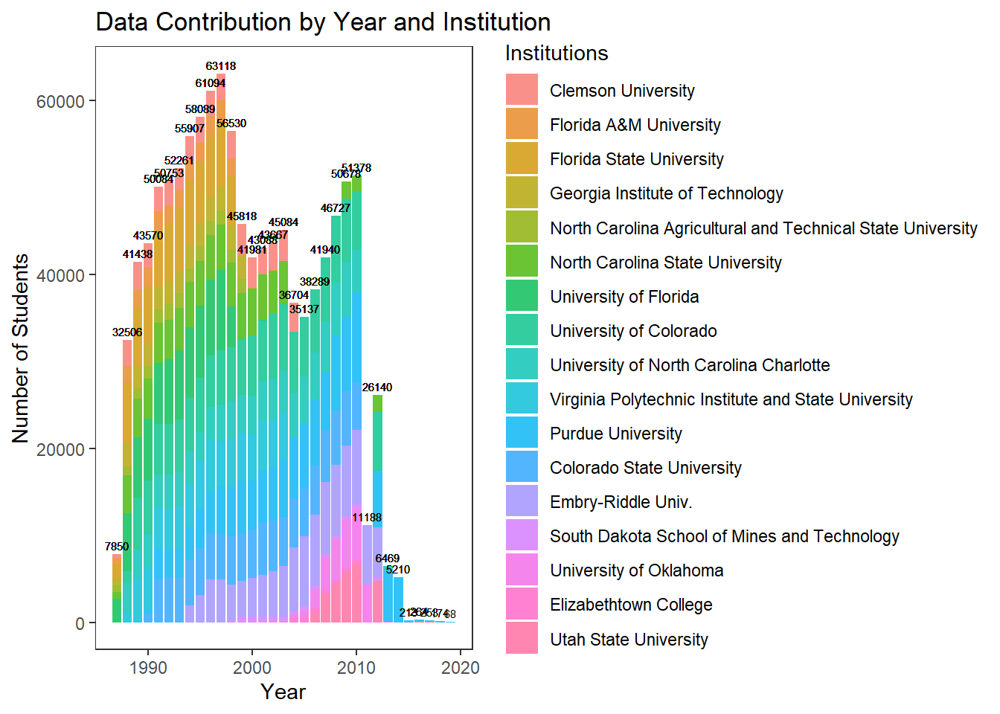
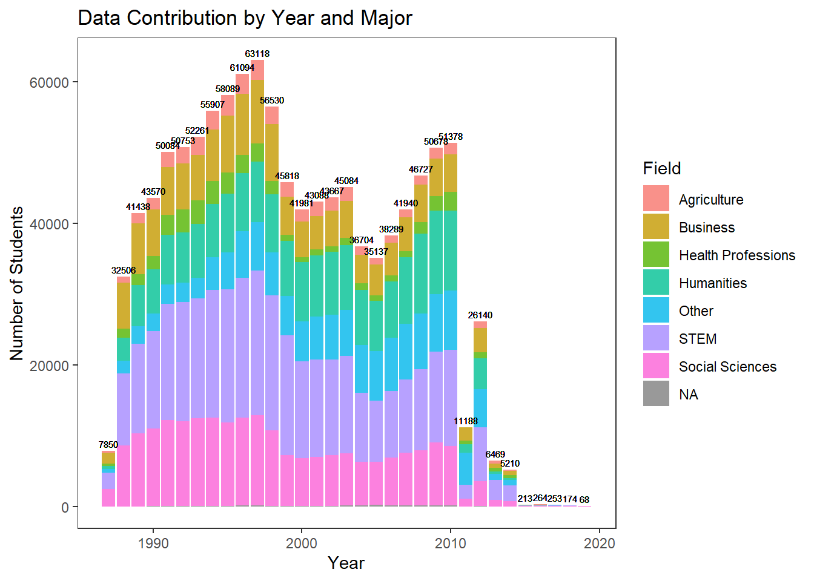
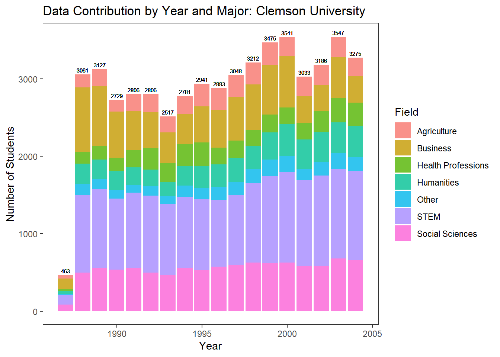
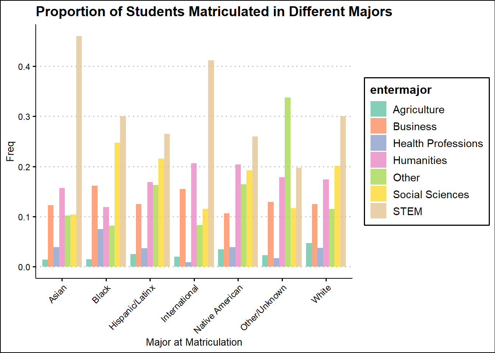
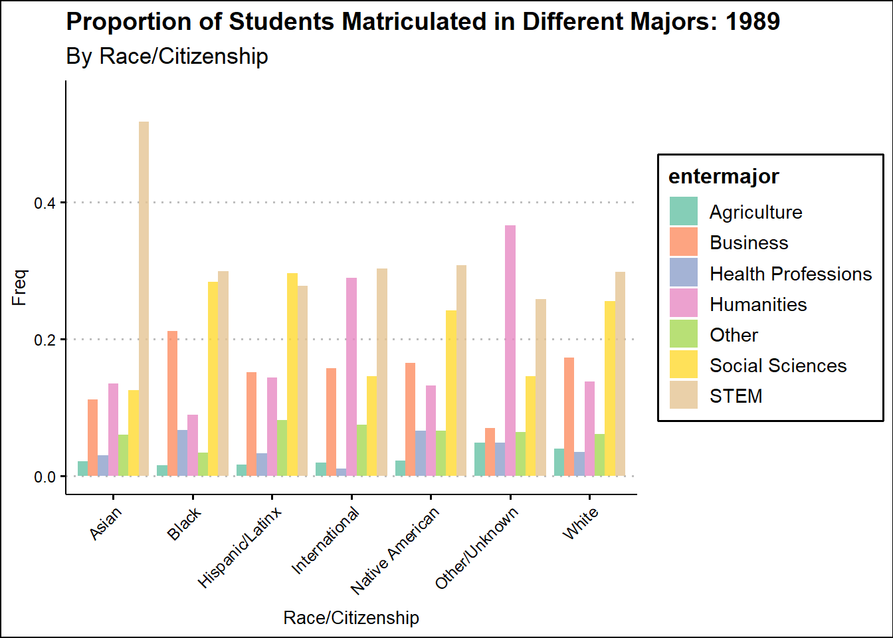
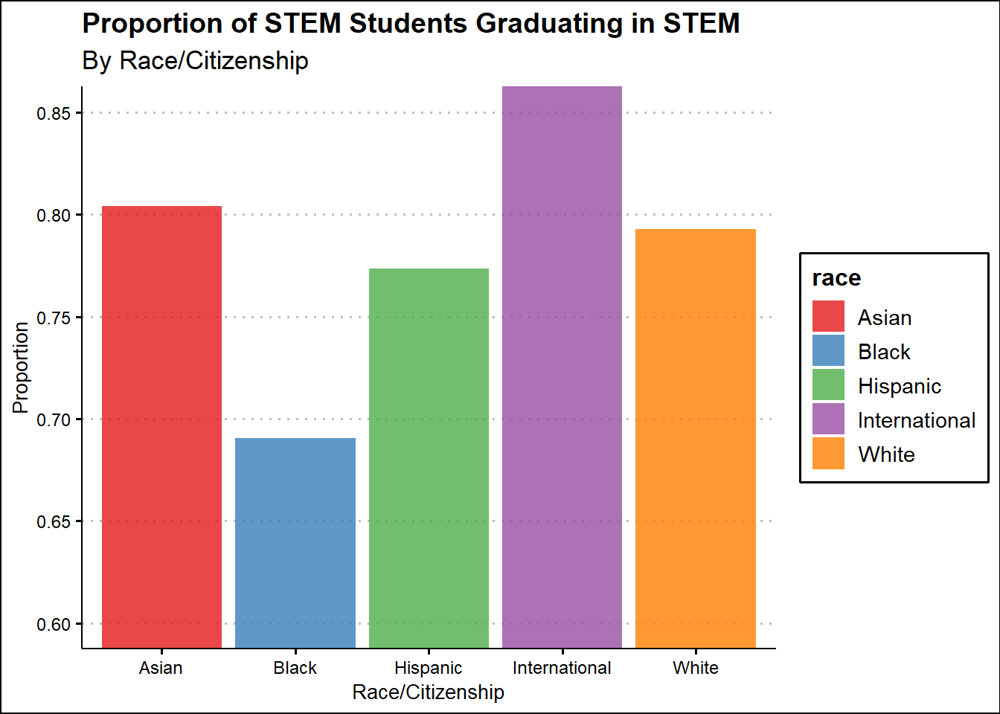
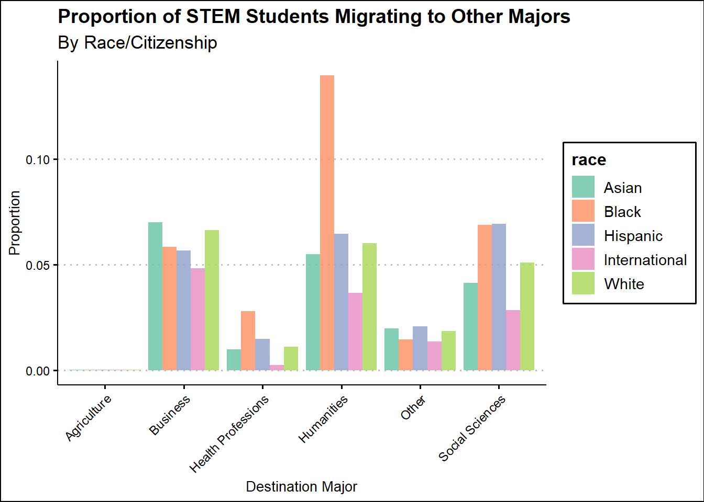
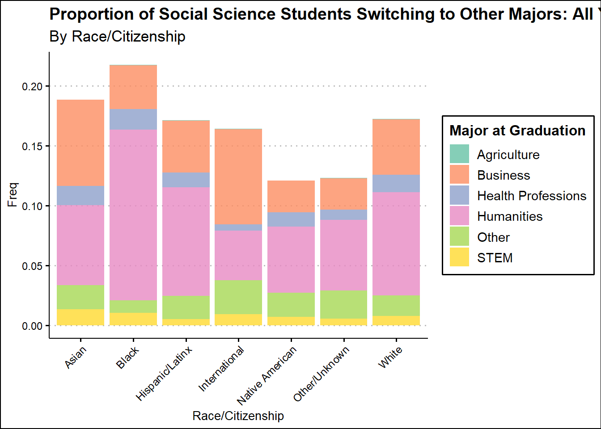

The MIDFIELD Exploratory Analysis Summary
Data Contribution By Institution and Year
NOTE:
Three campuses of the Embry-Riddle Aeronautical University - Worldwide, Daytona Beach, and Prescott - were combined into one single institution: Embry-Riddle Aeronautical Univ.
The matriculation year variable was constructed based on the
term_entervariable in thestudentdata set.
Data Contribution By Major and Year: All Universities

Data Contribution By Major and Year: Clemson University

Racing Bar Chart of Top 10 Majors Over Time: Selected Universities
I: Clemson University: 1987-2004

II: Purdue University: 1993-2011

Sankey Diagram of Major Flow: All Year Aggregated
Data source: MIDFIELD
NOTE: Hover your cursor over the flow to see the numbers.
Sankey Diagram of Major Flow: All Year Aggregated
NOTE: Fewer categories; Business and Economics Combined
NOTE: Hover your cursor over the flow to see the numbers.
Major at Matriculation by Race/Citizenship: All Year Aggregated

Major at Matriculation by Race/Citizenship: By Year Animation
1989 - 2010

STEM Major Retention by Race/Citizenship: All Year Aggregated

Major Migration by Race/Citizenship: All Year Aggregated

Social Science Major Retention by Race/Citizenship: All Year Aggregated
